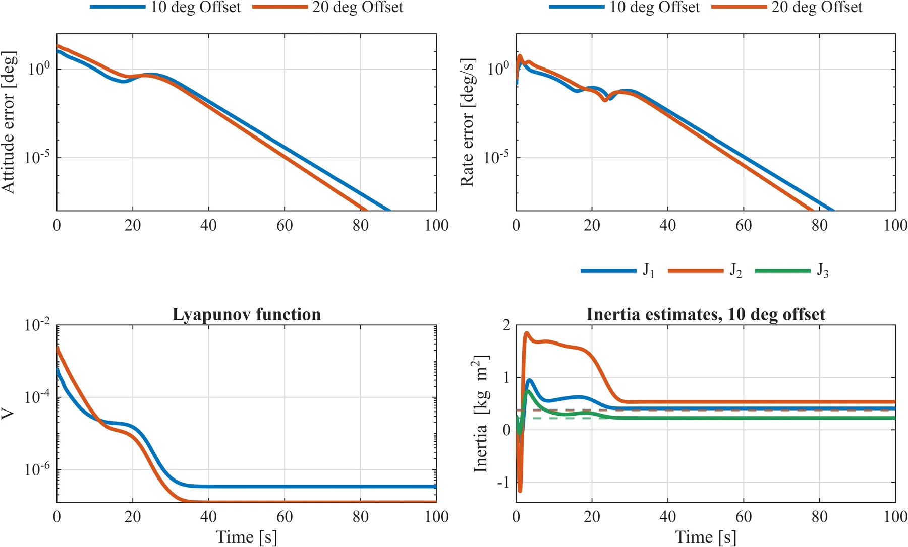
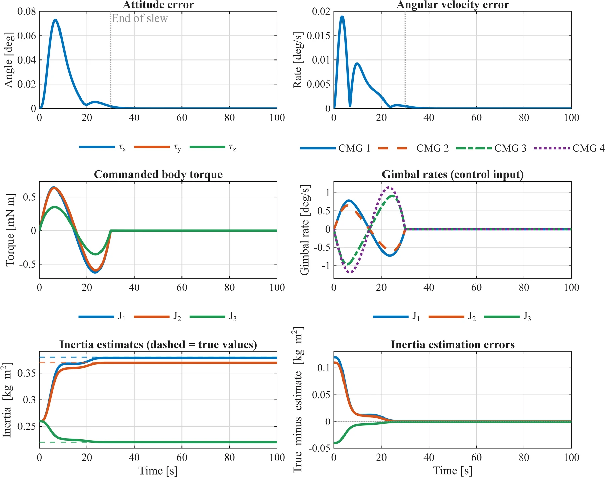
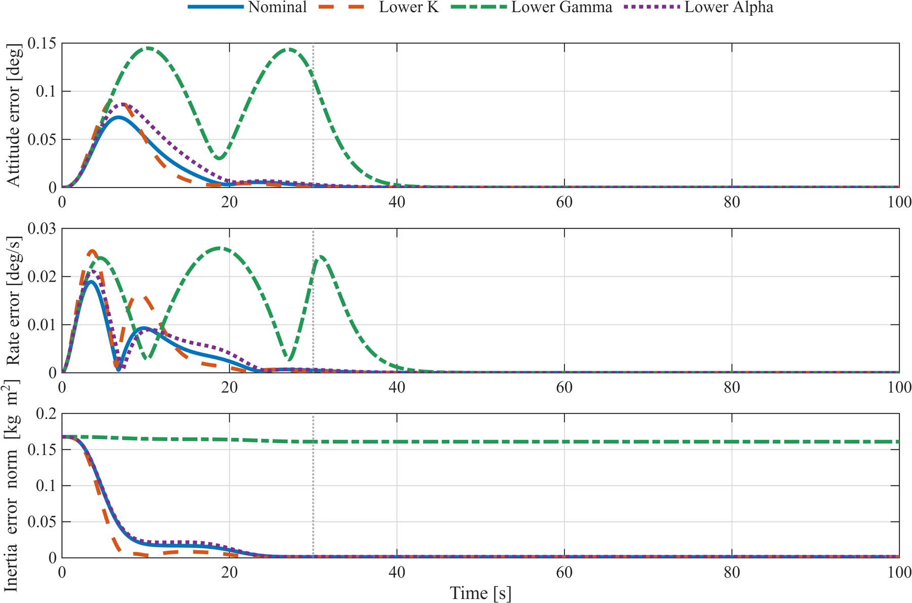
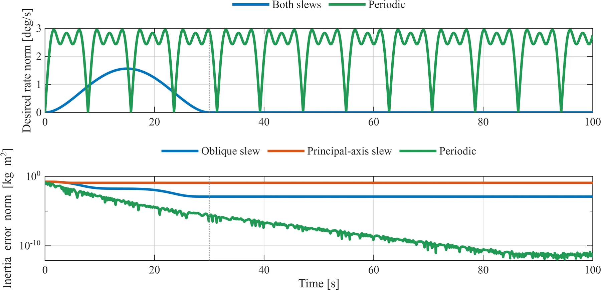
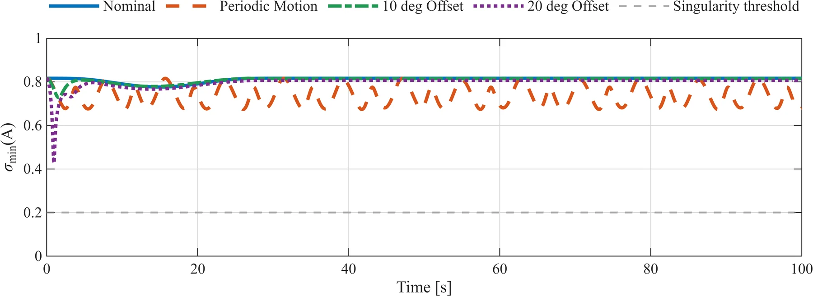

Adaptive attitude tracking for CubeSats with uncertain inertia
An adaptive controller that tracks a commanded attitude without knowing the spacecraft's inertia, driving a four-CMG pyramid through a pseudoinverse steering law, with a Lyapunov proof of asymptotic tracking.
- Course
- Nonlinear Control (EML 6350), University of Florida
- Period
- Fall 2026
- Status
- Complete
- Tools
- MATLAB

Overview
A spacecraft's inertia changes as it deploys solar panels or antennas and burns propellant, and a controller built on the wrong inertia loses tracking accuracy. That matters for docking, capture and laser crosslinks, where the allowed attitude and rate errors are small.
This project treats the three principal moments of inertia as constant and unknown. An adaptive update law uses the quaternion tracking errors to correct the inertia estimates inside the torque command, and a pseudoinverse steering law turns that torque into gimbal rates for four control moment gyroscopes in a pyramid. The controller follows Ahmed, Coppola and Bernstein (1998), specialized to a diagonal inertia matrix.
Approach
- Model. Rigid-body attitude dynamics with quaternion kinematics, and a four-CMG pyramid with constant flywheel speeds and ideal gimbal-rate tracking.
- Controller. A torque command built from the attitude and angular-velocity tracking errors, with an adaptive update law for the three inertia estimates.
- Stability proof. Lyapunov analysis and Barbalat's lemma establish asymptotic attitude and angular-velocity tracking with bounded inertia estimation error, assuming exact torque realization and a uniform margin from CMG singularities.
- Simulation. Eight 100 s cases in MATLAB: a 25° oblique slew at nominal gains and with each gain reduced in turn, the same slew starting 10° and 20° off, a principal-axis slew, and a periodic motion. Every run starts with the same estimate for all three moments, up to 32% from the true values.
Results
- Nominal slew. Peak attitude error 0.0729° and peak rate error 0.0189°/s. The attitude error stays below 0.001° after 32.1 s, and the inertia estimates finish within 1.22 × 10−3 kg·m² of the true values.
- Initial attitude error. Starting 10° and 20° from the reference, the attitude error falls below 0.001° after 49.0 s and 46.2 s. The inertia estimates do not reach the true values in these runs, and tracking still converges.
- Gains. The nominal gains give the smallest tracking peaks. Reducing the adaptation gain gives the largest peak (0.1446°), the longest settling time (41.95 s) and the largest final inertia error (0.161 kg·m²).
- Reference motion. A periodic motion brings all three inertia estimates to the true values (error below 10−10 kg·m²). A principal-axis slew updates only the first moment.
- CMG feasibility. The smallest singular value of the steering Jacobian across all runs is 0.4245, above the 0.20 threshold, and the torque residual stays at numerical round-off.
Limits and next steps
The CMG model assumes exact gimbal-rate tracking with no rate or travel limits, and the 20° case commands gimbal rates up to 124.6°/s. The update law has no projection, so the estimates can briefly turn negative during large transients. A projection on the update law and a gimbal model with rate limits are the next steps.
Figures







